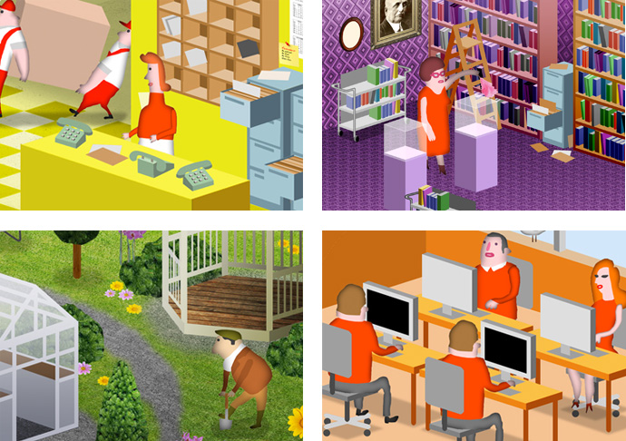
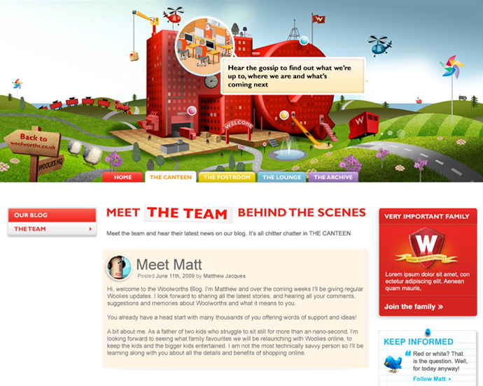
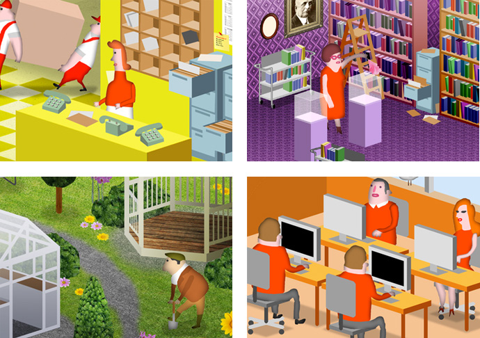
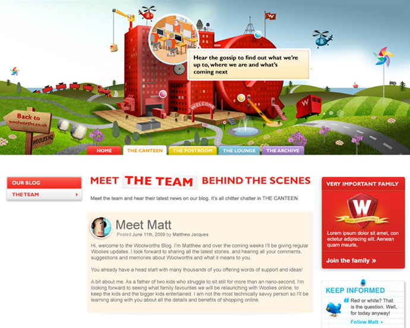

WOOLWORTHS // HQ
Characters and environments as part of a website for Woolworths to promote their new online venture. The aim of the site was to be a hub for news and updates about what Woolworths were up to since disappearing from the high street. The concept was of a Woolworths Headquarters, where users can find out about the upcoming online store, featured promotions, as well as information about the new team and the company's history.
 


